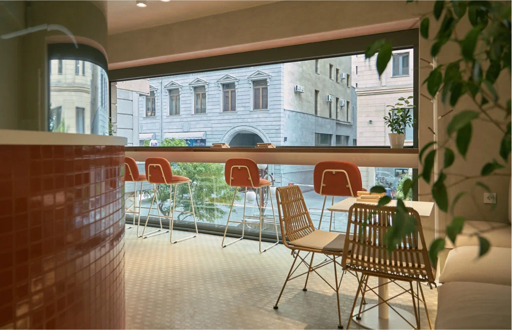

Добро пожаловать |
Это список мест от UPTOWN, в которых нужно побывать в первую очередь! |
Хороших впечатлений! |
Где поесть? |
Katsin Restaurant |
Fine dining с морепродуктами, блюдами на гриле и нереально фотогеничными десертами и интерьером. Если хотите выгулять роскошные наряды — приходите на выходных. Будет шумно, пьяно и дорого! |
Gallia Restaurant |
Стильное пространство с открытой кухней, музыкой на виниле и comfort food в авторском исполнении. Здесь всегда полная посадка, бронировать столик лучше за несколько дней. |
Телефон для брони 011995599 |
 |
Cafe De Angelo |
Место напоминает кафе на улочках центрального Парижа. Столики под мрамор, диваны с полосатой обивкой и хиты Эдит Пиаф на фоне. Если коротко, ресторан с традиционной итальянской кухней, французским вайбом и идеальным аль денте |
Где выпить? |
 |
The Bird Cage |
Экспериментальный бар с французско-полинезийской кухней. В «Клетке» каждый коктейль назван в честь птицы и вдохновлён регионом её обитания. Для любителей джина здесь особое место — в барной карте около 20 видов |
Kong Restaurant & Cocktail Room |
Коктейльный бар и кафе с уклоном на Азию. По будням пробуйте поке и булочки бао за душевными разговорами на балконе. А по выходным берите коктейль Herbarium, настоянном на пало-санто, под модный диджей-сет |
 |
In Vino |
Бар, клуб и магазин с внушительной винной картой: 850 наименований. |
Где поковоркать? |
 |
Mirzoyan Library |
Особенное для города место в старом особняке, которое совмещает библиотеку, фотогалерею и кафе. Идеально, чтобы поработать или почитать под чашечку кофе. Следите за афишей мероприятий, здесь бывают музыкальные вечера и лекции |
 |
Lumen coffee |
Кофейня-коворкинг для ценителей хорошего зёрна, диджитал-номандов и ереванских модников. Здесь всегда полная посадка, но оно того стоит |
 |
The look community |
Стильное местечко для работы на Арама. Стабильный Wi-Fi, небольшой зал, принтер, места для работы в уютном дворе, чай и кофе. Кроме коворкинга сюда можно заглянуть на английский разговорный клуб или на кинопоказ под звёздами. Дневной пасс — 3 000 AMD |
Где пить кофе? |
 |
AfroLab Roastery |
Спешелти-кофейня, эспрессо-бар и место встречи. Бронируйте столик заранее, а после идите в соседний Minas на мартини с оливкой. |
Телефон для брони 011995599 |
 |
Prepa |
Новая точка со здоровым питанием и большим выбором кофе. В трёх словах: свежее, быстрое, стильное. В меню готовые супы, сэндвичи, поке и салаты. На десерт под кофе сладкие кексы и круассаны. |
Gotcha |
Шумное take away место с лучшим бабл ти и огромным выбором напитков на основе кофе. Дополняйте тапиокой собственного производства, а не десерт берите японские пирожные моти — в кафе целых 11 вкусов |
Где развлечься? |
 |
Flow House Yerevan |
Тёплые волны, подтянутые инструкторы и доски для ситивейв. Отличное место, чтобы развлечься и освоить новое хобби. Если не знаете, что такое «бэкдор» и «раундхаус» - можно записаться в серф-школу прямо на месте. Алоха! |
Jellyfish |
Стильный бар с открытым бассейном, пляжем с белым песком и соломенными зонтами. Распорядок дня в Jellyfish такой: утром — позаниматься йогой, днём — позагорать под диджей-сеты, а на закате сделать пару эстетичных кадров с «космо» в руках |
 |
VereV Rope Park |
Самое масштабное развлечение для ценителей высоты и адреналина. Полоса препятствий с деревянными дорожками, мостиками и сетками, подвешанными в нескольких метрах над землёй |
 |